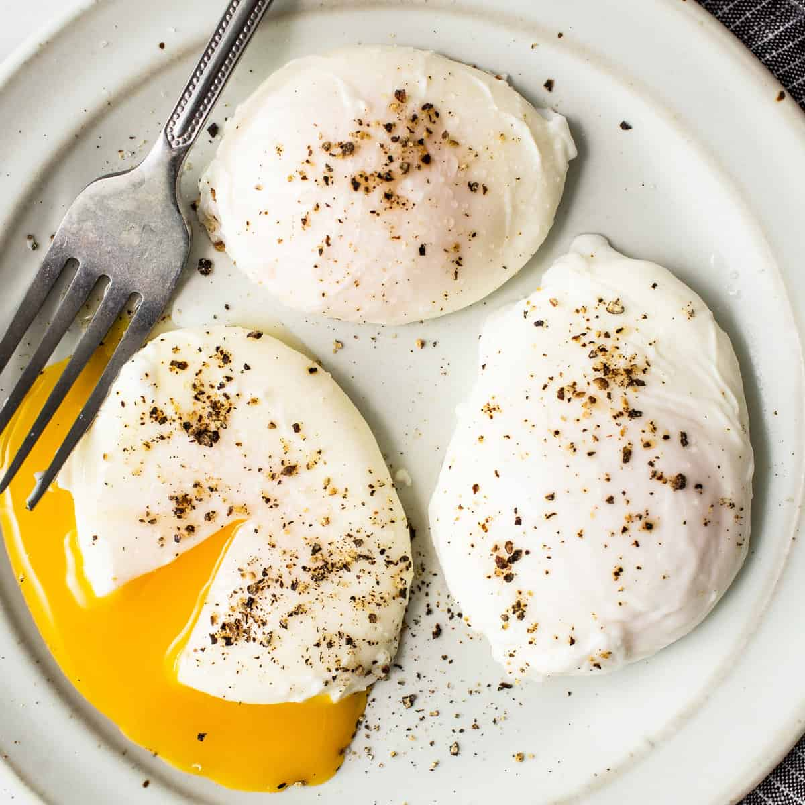

My Perfect Poached Eggs

Description
Who doesn't like a beautifully poached egg? In the past, I would never be able to make poached eggs without everything falling apart. I couldn't understand how restaurants, diners, brunch places could always have these perfectly round poached eggs without egg whites flying all over the place.
That was until I discovered the secret, and I'm here to share thsi with all of you! Keep on reading to see what I learned.
Ingredients
- 1 large egg
- 1-2 tablespoons of vinegar
Steps
- Bring a large pot of water to a boil, then reduce the heat to low
- While waiting for the water to boi, crack your egg into a small fine mesh sieve over a bowl. Swirl the egg in the sieve until all the liquidy egg whites have been removed. Then place the eggin a ramekin.
- Stir the vinegar into the water and create a vortex. Add the egg to the middle of the vortex and cook the egg for 3 minutes (timing is important here)
- Remove the egg with a slotted spoon and dab it on a paper towel to remove any excess water. Serve immediately.
- Alternative, if making the poached eggs for meal prep or ahead of times, transfer the cooked poached eggs to an ice water bath and refrigerate for a couple of days. When ready to serve, add boiling water to a bowl, then add the cold poached egg and submerge 20-30 seconds or until warmed through. Remove the poached egg with a slotted spoon, dab dry and serve immediately.